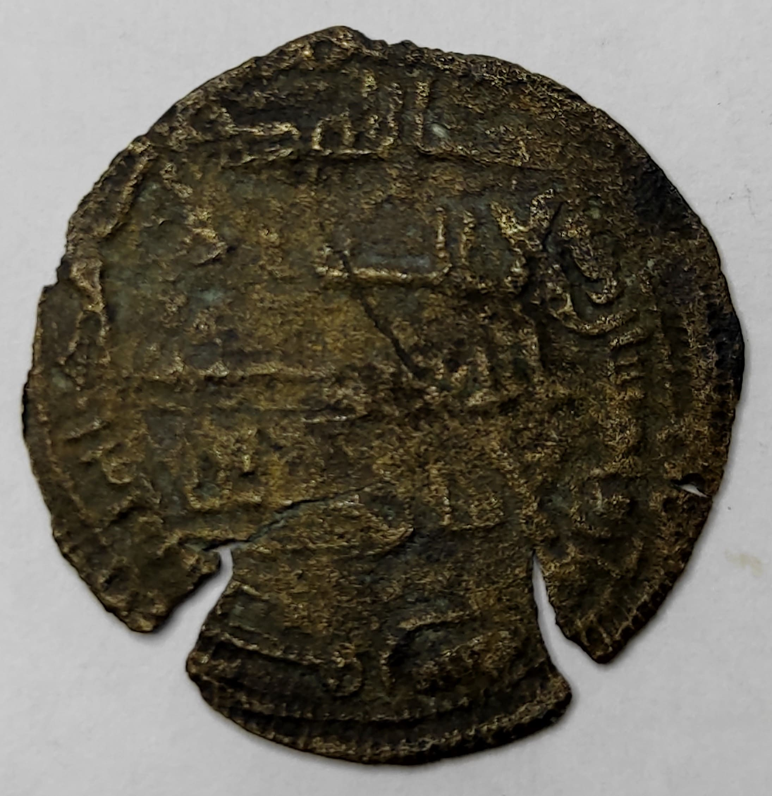

Abad ke-10 Masehi merupakan periode penting dalam sejarah awal penyebaran Islam di Nusantara. Pada masa ini, dunia Islam berada di bawah kekuasaan Dinasti Abbasiyah dengan Baghdad sebagai pusat peradabannya. Periode ini sering disebut sebagai bagian dari "Zaman Keemasan Islam" di mana terjadi perkembangan pesat dalam berbagai bidang ilmu pengetahuan seperti matematika, astronomi, dan kedokteran, serta kemajuan signifikan dalam perdagangan internasional, pelayaran, navigasi, dan sistem administrasi. Kejayaan peradaban Islam ini memberikan dampak tidak langsung terhadap Nusantara melalui intensifikasi hubungan dagang maritim.
Kepulauan Nusantara pada abad ke-10 menempati posisi strategis sebagai jalur perdagangan penting di Samudra Hindia yang menghubungkan dunia Islam dengan Tiongkok. Pedagang Muslim dari Arab, Persia, dan India secara aktif melakukan pelayaran ke berbagai pelabuhan di Nusantara. Beberapa pelabuhan strategis yang menjadi pusat aktivitas perdagangan antara lain Barus di Sumatra yang terkenal dengan rempah-rempah dan kapur barusnya, Palembang dan Jambi sebagai pusat perdagangan maritim utama, serta pelabuhan-pelabuhan di pantai utara Jawa yang menjadi tempat persinggahan kapal-kapal dagang. Interaksi intensif antara pedagang Muslim dengan penduduk lokal di pelabuhan-pelabuhan ini menjadi cikal bakal pembentukan komunitas Muslim awal di Nusantara.
Keberadaan komunitas Muslim di Nusantara pada abad ke-10 didukung oleh berbagai bukti arkeologis dan catatan sejarah. Pedagang Muslim yang singgah di pelabuhan-pelabuhan Nusantara mulai membentuk komunitas kecil, terutama di kawasan pesisir. Bukti arkeologis berupa koin Dirham dari Dinasti Abbasiyah dan Umayyah telah ditemukan di berbagai lokasi di Sumatra dan Jawa, menunjukkan adanya transaksi perdagangan dengan dunia Islam. Catatan dari Tiongkok pada masa Dinasti Song juga menyebutkan kehadiran pedagang Arab dan Persia di wilayah Nusantara. Meskipun masih sangat jarang, mulai muncul prasasti dan kode dagang lokal yang menggunakan penanggalan Islam, mengindikasikan awal pengenalan sistem kalender Islam di wilayah ini.

Kerajaan Sriwijaya yang pada abad ke-10 masih menjadi kekuatan maritim dominan di Nusantara memainkan peran penting dalam proses awal Islamisasi. Sebagai penguasa jalur perdagangan maritim, Sriwijaya menerapkan kebijakan diplomasi terbuka dengan para pedagang Muslim, memberikan izin untuk berdagang dan menetap sementara di wilayah kekuasaannya. Hal ini menjadikan Sriwijaya sebagai pusat akulturasi budaya di mana tradisi Hindu-Buddha yang sudah lama berkembang mulai bersentuhan dengan budaya Islam. Sriwijaya juga aktif dalam pertukaran budaya internasional, mengirimkan biksu dan pelajar ke India dan Tiongkok, sebagaimana tercatat dalam catatan perjalanan Sang Hyang Kamahayanikan dan berbagai sumber Tiongkok.
Penyebaran Islam di Nusantara pada abad ke-10 memiliki karakteristik yang khas dan berbeda dengan pola penaklukan militer yang terjadi di beberapa wilayah lain. Islam mulai dikenal secara lokal terutama di kawasan pesisir melalui cara-cara damai, yaitu melalui aktivitas perdagangan dan hubungan sosial antara pedagang Muslim dengan penduduk setempat. Komunitas Muslim yang terbentuk pada periode ini masih berupa kelompok-kelompok kecil yang terdiri dari pedagang Muslim dan keluarga lokal yang menjalin hubungan dengan mereka, baik melalui pernikahan maupun adopsi budaya. Meskipun belum ada kerajaan Islam lokal yang berdiri di Nusantara pada abad ini, fondasi untuk perkembangan Islam di masa mendatang sudah mulai terbentuk melalui interaksi sosial dan ekonomi yang berkelanjutan.
Abad ke-10 menandai intensifikasi hubungan perdagangan antara Nusantara dengan Tiongkok di bawah Dinasti Song. Catatan-catatan Tiongkok dari periode ini secara eksplisit menyebutkan keberadaan pedagang Muslim di berbagai pelabuhan Nusantara yang terlibat dalam perdagangan komoditas seperti rempah-rempah, emas, cendana, dan kain sutra. Hubungan perdagangan trilateral antara Nusantara, dunia Islam, dan Tiongkok ini memungkinkan terjadinya transfer budaya Islam tahap awal ke wilayah Nusantara. Para pedagang Muslim tidak hanya membawa barang dagangan, tetapi juga membawa nilai-nilai, praktik keagamaan, dan teknologi dari dunia Islam yang kemudian mulai diserap oleh masyarakat lokal, terutama di kawasan pelabuhan.
Masyarakat Nusantara pada abad ke-10 masih didominasi oleh kepercayaan Hindu-Buddha yang telah lama berakar, ditambah dengan berbagai kepercayaan lokal atau animisme yang masih kuat. Islam pada periode ini baru dikenal di kawasan pesisir dan belum mendominasi kehidupan keagamaan masyarakat secara umum. Namun demikian, proses akulturasi budaya sudah mulai terjadi sebagai hasil dari interaksi berkelanjutan dengan pedagang Muslim. Bukti akulturasi ini dapat dilihat dari munculnya nama-nama Arab yang digunakan oleh pedagang atau penduduk di kawasan pelabuhan, serta adopsi teknik pelayaran dan konstruksi kapal yang mengikuti model Arab-Persia. Proses akulturasi ini berjalan secara gradual dan damai, menciptakan kondisi yang kondusif bagi perkembangan Islam di masa-masa berikutnya.
Abad ke-10 Masehi merupakan periode embrio bagi perkembangan Islam di Nusantara. Pada masa ini, Islam mulai dikenal di kawasan pesisir Nusantara, khususnya di pelabuhan-pelabuhan perdagangan yang ramai. Meskipun belum ada kerajaan Islam yang berdiri atau konversi massal penduduk lokal, fondasi komunitas Muslim sudah mulai terbentuk melalui keberadaan pedagang Muslim yang menetap dan menjalin hubungan dengan masyarakat lokal. Hubungan ekonomi dan sosial yang terjalin antara Nusantara dengan dunia Islam melalui jalur perdagangan maritim menjadi medium utama dalam pengenalan nilai-nilai dan ajaran Islam. Proses Islamisasi yang berlangsung secara damai dan akulturatif pada abad ke-10 ini meletakkan dasar bagi perkembangan Islam yang lebih masif di abad-abad berikutnya, khususnya mulai abad ke-13 ketika kerajaan-kerajaan Islam pertama mulai muncul di Nusantara.